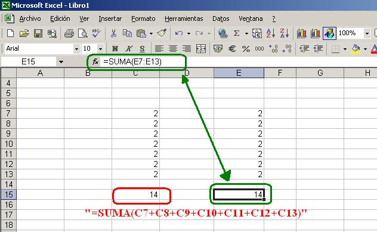

texto introductivo: A continuación vas a hallar una breve descripción de la funciones de Excel junto a un video e una imagen que te ayudaran a entender mas sobre la herramienta de Excel.
Una función es una formula predefinida por Exel que trabaja sobre uno o más argumentos en un orden especifico o una determinada estructura. El resultado se mostrara en la celda donde se introdujo el contenido.
